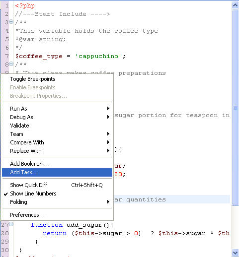
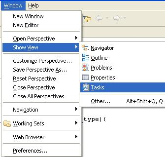

Tasks
Tasks are reminders by the programmer to him/herself. They have a name
and a priority and are associated (by the programmer) with any line in
any file (or with the file as a whole) and are automatically synchronized
with the Editor.
They are used as reminders of actions, work to do or any other action
required by the programmer and appear in their own View.
Tasks are used in conjunction with the Editor. Each Task can be associated
with a specific line of code. A Task consists of a name and a priority.

Figure 1 - Adding a Task to Existing
The Task View contains
the following information:
Completion
Status check box - indicates the current status of the task.
Priority:
High
( ), Normal
or Low(
), Normal
or Low( ).
).
Description:
The description of the task.
Resource:
Name of the file containing the Task.
Path:
Location of the resource.
Location:
The line number of the problem is found within the source.
Sorting and Filtering
You can sort Tasks by clicking on the column
containing the above information. In addition, you can filter tasks by:
Click Window
| Show View | Tasks to open the Task View from any location.

Figure 2 - Open Task View